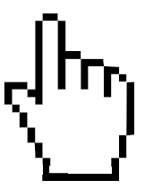

INSTRUCCIONES DE USO
 Selecionar el mapa de la variable que desea visualizar
Selecionar el mapa de la variable que desea visualizar
 Deslizar sobre el mapa o pulsar para ver datos
 Pulsar y mantener para desplazar el mapa
Pulsar y mantener para desplazar el mapa
 Pulsar para acercar el mapa
Pulsar para acercar el mapa
Pulsar para volver a la posición inicial
Pulsar para alejar el mapa
 Pulsar para ver en pantalla completa
Pulsar para ver en pantalla completa
 Introducir el município (localidad) que desea buscar
Introducir el município (localidad) que desea buscar
 Pulsar para ver las Administraciones que apoyan/cofinancian el presente visor cartográfico
Pulsar para ver las Administraciones que apoyan/cofinancian el presente visor cartográfico
Pulsar para minimizar el mapa de situación
 Pulsar para minimizar la leyenda
Pulsar para minimizar la leyenda